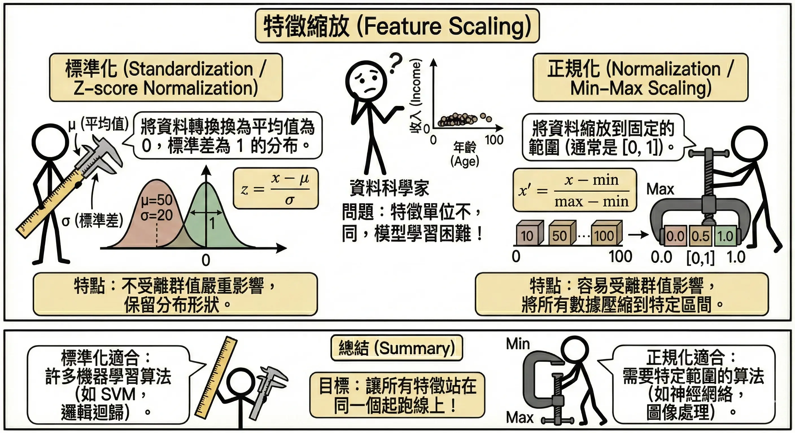
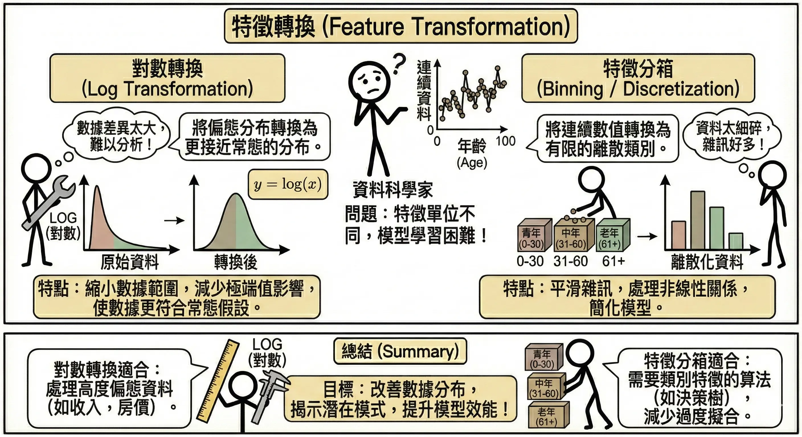
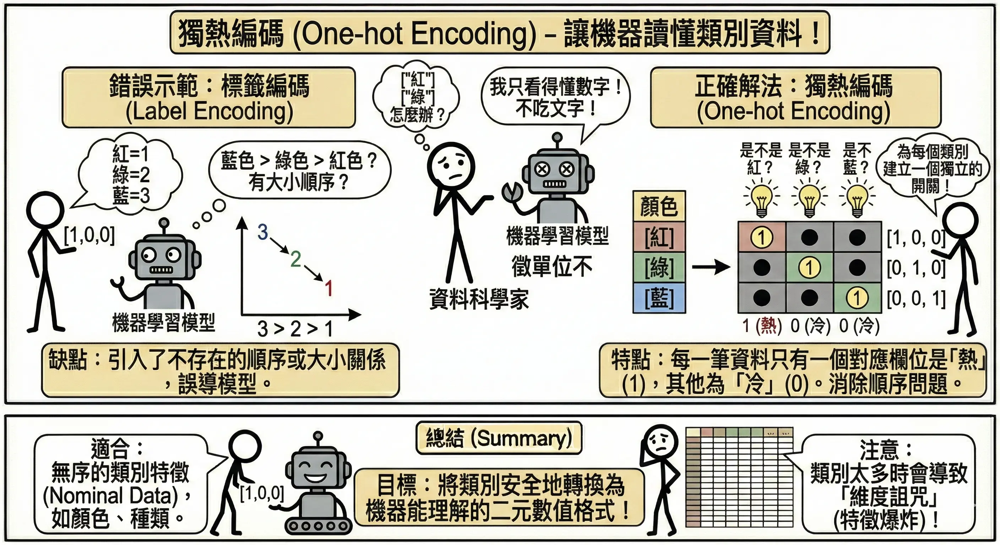
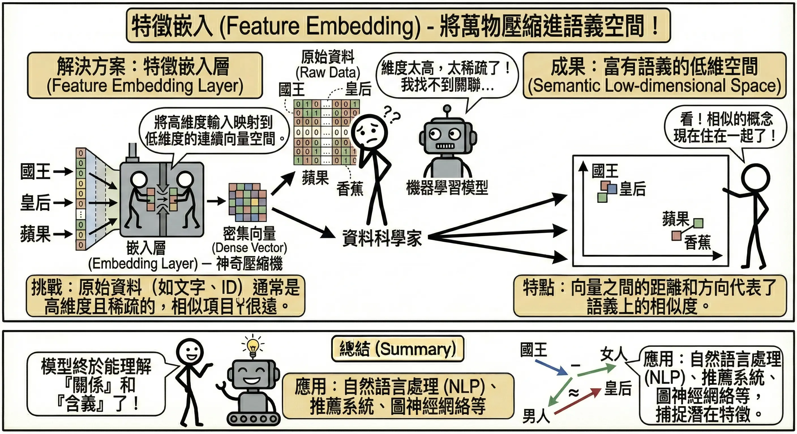
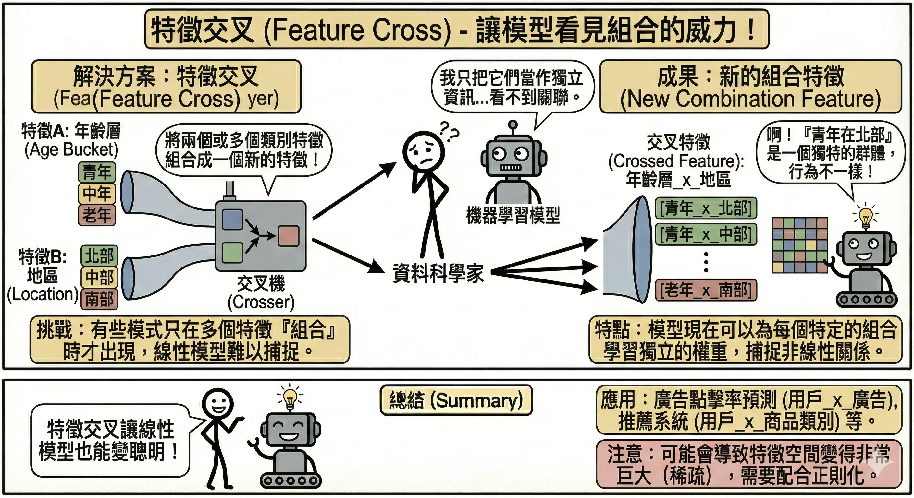
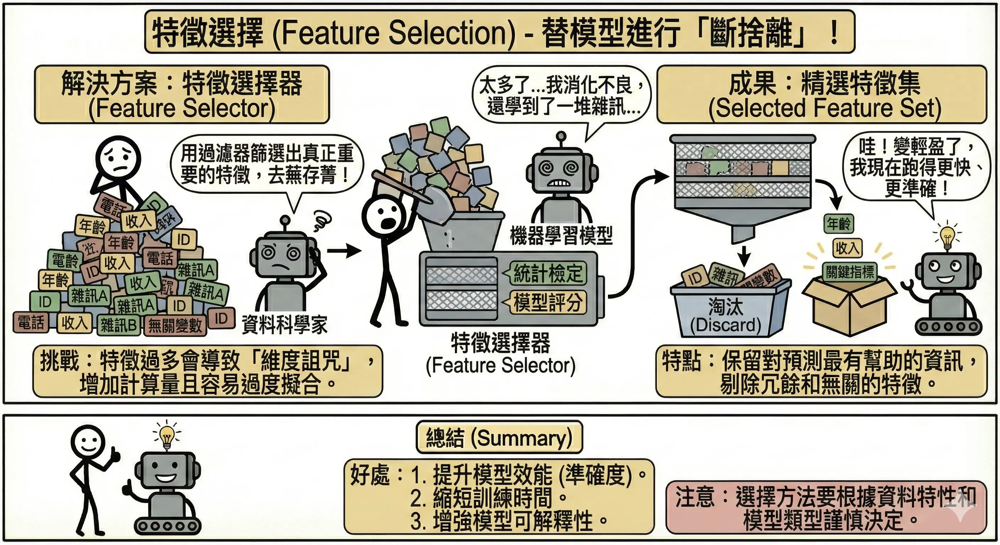
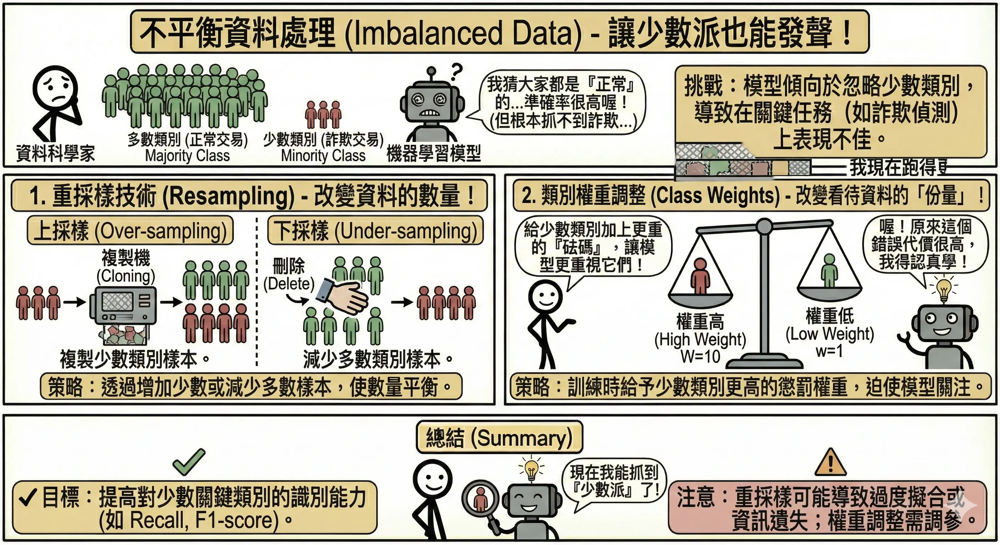

特徵工程 (Feature Engineering)
特徵工程被認為是機器學習中「最像藝術」的部分。吳恩達 (Andrew Ng) 曾說：「數據就像原油，而特徵工程就是煉油的過程。」好的特徵工程能讓普通的模型表現出色，而糟糕的特徵工程則會讓頂尖的模型無用武之地。
簡單來說，特徵工程就是將原始資料轉換為更能代表問題本質的特徵，讓演算法更容易理解和學習。
數值特徵處理
數值資料（如身高、價格、次數）看似可以直接使用，但往往需要經過轉換才能發揮最大效用。
特徵縮放 (Feature Scaling)
當不同特徵的單位或範圍差異很大時，模型可能會被數值大的特徵主導，導致學習效果不佳。這在計算「距離」的演算法（如 KNN, K-Means）中尤為嚴重。
- 為什麼需要縮放？
- 假設我們有兩個特徵：
- 年齡：範圍 0-100。
- 年薪：範圍 22,000 - 10,000,000。
- 如果不縮放，年薪差 1 萬元（數值差 10000）對距離的影響，會遠大於年齡差 50 歲（數值差 50）。模型會誤以為「年薪」才是唯一重要的因素。
- 假設我們有兩個特徵：
- 常見方法：
- 標準化 (Standardization / Z-score Normalization)：
- 將資料轉換為平均值 𝝁 為 0，標準差 𝛔 為 1 的分佈。
- 公式：\[ z = \frac{x - \mu}{\sigma} \]
- 適用：大部分機器學習演算法（如 SVM, Logistic Regression, Neural Networks），特別是假設資料呈常態分佈時。
- 正規化 (Normalization / Min-Max Scaling)：
- 將資料壓縮到固定範圍（通常是 [0, 1]）。
- 公式：\[ x_{new} = \frac{x - x_{min}}{x_{max} - x_{min}} \]
- 適用：對範圍敏感的演算法，或影像處理（像素值 0-255）。缺點是容易受極端值 (Outlier) 影響。

特徵縮放 - 標準化 (Standardization / Z-score Normalization)：
特徵轉換
有時候，原始數值的分布形狀不利於模型學習，我們需要改變它的形狀。
- 對數轉換 (Log Transformation)：
- 目的：處理長尾分佈或右偏資料（如收入、房價、網頁點擊數）。
- 原理：取 Log 可以將原本擠在一起的較小數值拉開，並壓縮極端大的數值，使分佈更接近常態分佈 (Normal Distribution)。
- 例子：
- 原始：[10, 100, 1000, 10000, 100000] (級距很大)
- Log10 後：[1, 2, 3, 4, 5] (變成等距，線性關係更明顯)
- 特徵分箱 (Binning / Discretization)：
- 目的：將連續數值轉為區間類別，過濾掉微小的雜訊。
- 例子：將「年齡」轉為「年齡層」。
- 原始：18, 19, 20, 21, …, 65, 66…
- 分箱後：
- 0-18: 未成年
- 19-35: 青年
- 36-60: 中年
- 60+: 老年
- 效果：增加模型的魯棒性 (Robustness)，防止模型過度關注「25 歲和 26 歲有什麼不同」。

## 類別特徵編碼 {#sec-categorical-encoding}
機器學習模型通常是數學公式，只看得懂數字，看不懂文字。我們需要將類別資料（如顏色、城市）轉換為數字。
常見編碼方式
| 編碼方式 | 說明 | 適用情境 | 範例 (T-shirt 尺寸) |
|---|---|---|---|
| 序數編碼 (Ordinal Encoding) |
依據類別的順序或大小賦予整數值。 | 類別間有順序關係 (Size, Rating)。 | S → 1 M → 2 L → 3 XL → 4 |
| 獨熱編碼 (One-hot Encoding) |
為每個類別建立一個獨立的欄位 (Dummy Variable)，是該類別則標為 1，否則為 0。 | 類別間無順序關係 (Color, City)。 | 紅色 → [1, 0, 0] 綠色 → [0, 1, 0] 藍色 → [0, 0, 1] |

獨熱編碼的潛在問題
- 維度災難 (Curse of Dimensionality)：如果類別數量非常多（例如：台灣的「路名」有成千上萬個），使用 One-hot Encoding 會產生數萬個新欄位，導致資料變得極度稀疏，計算量爆炸，模型也容易過擬合。
- 解決方案：
- 特徵雜湊 (Feature Hashing)：將類別映射到固定數量的桶 (Bucket) 中。
- 目標編碼 (Target Encoding)：用該類別在目標變數 (Target) 的平均值來取代類別（例如：用「台北市的平均房價」來代表「台北市」這個特徵）。
- 特徵嵌入 (Feature Embedding)：(見下文)
特徵嵌入 (Feature Embedding)
這是在深度學習中處理高基數類別（High Cardinality）或文本資料的神器。
- 做法：將每個類別映射到一個低維度的向量空間（Vector Space）。
- 效果：讓意義相近的類別在空間中距離較近。
- 例如在 Word2Vec 中：Vector(國王) - Vector(男人) + Vector(女人) ≈ Vector(皇后)。
- 這不僅解決了維度問題，還捕捉了類別之間的語意關係。

進階特徵技巧
特徵交叉 (Feature Cross)
有時候，單一特徵不足以解釋結果，特徵之間的組合才是關鍵。
- 定義：將兩個或多個特徵組合起來，捕捉非線性的交互作用。
- 例子：房地產價格預測
- 特徵 A：經度 (Longitude)
- 特徵 B：緯度 (Latitude)
- 單看經度或緯度，很難判斷房價（同一經度有精華區也有郊區）。
- 交叉特徵：將地圖切成網格，
經度 x 緯度代表一個具體的區塊 (Block)。信義區的某個區塊房價顯然比山區的某個區塊高。這就是特徵交叉的威力。

特徵選擇 (Feature Selection)
「特徵越多越好」是新手的迷思。事實上，垃圾進，垃圾出 (Garbage In, Garbage Out)。過多的特徵（包含無關特徵或雜訊）會帶來三大災難：
- 過度擬合 (Overfitting)：
- 模型會試圖去學習「雜訊」中的規律，而不是真正的訊號。
- 例子：預測房價時，如果把「屋主的幸運數字」也加進去，模型可能會剛好發現「幸運數字 7 的房子比較貴」，這顯然是巧合，但在新資料上就會預測錯誤。
- 計算量大增 (Computational Cost)：
- 特徵數量加倍，訓練時間可能呈指數級增長。這對於即時應用（如高頻交易、自駕車）是致命傷。
- 維度災難 (Curse of Dimensionality)：
- 隨著特徵維度增加，資料在空間中會變得極度稀疏 (Sparse)。
- 為了維持同樣的資料密度，所需的訓練資料量需要呈指數級增加。如果資料量不夠，模型就無法有效學習。

常見篩選方法：
- 過濾法 (Filter)：
- 在進模型之前，先用統計方法篩選。
- 例如：計算每個特徵與目標變數的相關係數 (Correlation)，太低的直接丟掉。
- 優點：快。 缺點：忽略了特徵之間的組合效果。
- 包裝法 (Wrapper)：
- 直接把特徵丟進模型試跑，看效果好不好。
- 例如：遞迴特徵消除 (RFE)，先用所有特徵訓練，把最沒用的特徵踢掉，再訓練，重複直到剩 N 個特徵。
- 優點：準。 缺點：慢（要訓練很多次模型）。
- 嵌入法 (Embedded)：
- 模型在訓練過程中自動決定特徵重要性。
- 例如：Lasso 回歸 (L1 Regularization) 會自動將不重要特徵的係數變成 0；決策樹/隨機森林 會計算 Feature Importance。
不平衡資料處理 (Imbalanced Data)
在現實應用中（如詐欺偵測、罕見疾病篩檢、工廠瑕疵檢測），正樣本（異常）通常極少，負樣本（正常）極多。
- 問題：如果詐欺只有 1%，模型只要全部猜「正常」，準確率 (Accuracy) 就高達 99%。但這個模型對抓詐欺完全沒用。
- 解法：

1. 重採樣 (Resampling)
改變資料的分佈，讓正負樣本平衡一點。
上(過)採樣 (Oversampling)
增加少數類別（如詐欺樣本）的數量。
- 隨機上(過)採樣 (Random Oversampling)：
- 做法：簡單粗暴地複製少數類別的樣本。
- 缺點：容易造成過度擬合 (Overfitting)，因為模型會反覆看到一模一樣的資料，把它們背下來。
- 例子：原本有 10 筆詐欺資料，直接複製 9 次，變成 100 筆一模一樣的詐欺資料。
- SMOTE (Synthetic Minority Over-sampling Technique)：
- 做法：不是單純複製，而是「無中生有」。
- 選定一個少數類別樣本 A。
- 找出它的鄰居樣本 B。
- 在 A 和 B 的連線上，隨機產生一個新的人工樣本 C。
- 優點：增加了樣本的多樣性，減少過度擬合風險。
- 例子：樣本 A 是 (1, 2)，鄰居 B 是 (2, 4)。連線中間點可能是 (1.5, 3)，這就是產生出來的新樣本 C。
- 做法：不是單純複製，而是「無中生有」。
- ADASYN (Adaptive Synthetic Sampling)：
- 做法：SMOTE 的改良版。它會根據樣本的學習難度（周圍有多少多數類別）來決定要生成多少新樣本。
- 特點：在「邊界模糊」或「難以分類」的區域生成更多樣本，強迫模型學習這些困難案例。
- 例子：如果樣本 A 旁邊都是正常人（很難分），ADASYN 會在它旁邊生 10 個新樣本；樣本 B 旁邊都是自己人（很好分），只生 1 個。
注意：類別型資料怎麼辦？ 標準的 SMOTE 和 ADASYN 是基於歐氏距離計算的，不能直接處理類別型資料（你不能計算「紅色」和「藍色」的平均值）。
- 若有類別特徵，應使用 SMOTE-NC (Nominal Continuous) 或 SMOTE-N 等變體，有興趣請自行研究。
下(欠)採樣 (Undersampling)
減少多數類別（如正常樣本）的數量。
- 隨機下(欠)採樣 (Random Undersampling)：
- 做法：隨機刪除多數類別的樣本。
- 缺點：可能會丟掉重要的資訊（把有用的正常樣本刪掉了）。
- 例子：原本有 1000 筆正常資料，隨機丟掉 900 筆，只剩 100 筆。
- Tomek Links：
- 做法：找出那些「靠得很近」但「類別不同」的樣本對（Tomek Links）。通常這些點是雜訊或邊界模糊點。刪除其中的多數類別樣本。
- 優點：能讓類別邊界更清晰。
- 例子：一個「正常人」和一個「詐欺犯」長得超像（特徵很近），把那個「正常人」刪掉，讓那區變成詐欺犯的地盤。
2. 類別權重調整 (Class Weights)
不改變資料，而是改變模型的計分方式。
- 做法：在訓練模型時，告訴模型：「答錯一筆少數類別（詐欺）的懲罰，是答錯一筆多數類別（正常）的 100 倍。」
- 效果：強迫模型重視少數類別，即使犧牲一點整體的準確率，也要把詐欺抓出來。
- 例子：
- 預測「正常」錯了：罰 1 元。
- 預測「詐欺」錯了：罰 100 元。
- 模型為了少賠錢，會寧可把「有點像詐欺的」都猜成詐欺。
本章總結與考點提示
核心概念回顧
特徵工程是提升模型效能最有效的方法。
- 數值處理：
- 縮放：標準化 (Z-score)、正規化 (Min-Max)。算距離的演算法必做。
- 轉換：Log 轉換（處理長尾/右偏）、分箱（抗雜訊）。
- 類別處理：
- 有序：序數編碼 (Label Encoding)。
- 無序：獨熱編碼 (One-Hot Encoding)。小心維度災難。
- 特徵選擇：
- 風險：特徵過多導致過度擬合、維度災難。
- 方法：過濾法 (Filter)、包裝法 (Wrapper)、嵌入法 (Embedded)。
- 不平衡資料：
- 過採樣：SMOTE (連線造點)、ADASYN (專攻難點)。
- 欠採樣：隨機刪除、Tomek Links (清邊界)。
- 權重調整：增加少數類別懲罰。
AI 應用規劃師認證考點
常考題型與解題策略：
- 編碼選擇題：
- 例題：「處理『衣服尺寸 (S, M, L)』應使用何種編碼？」
- 解答：序數編碼 (Ordinal Encoding)。
- 例題：「處理『居住城市』應使用何種編碼？若城市有 1000 個怎麼辦？」
- 解答：獨熱編碼 (One-Hot Encoding)；若類別太多則考慮 Embedding 或 Target Encoding。
- 不平衡資料處理題：
- 例題：「SMOTE 的原理是什麼？」
- 解答：在少數類別樣本及其鄰居的連線上生成新樣本（非單純複製）。
- 例題：「資料中有大量類別型特徵，能直接用 SMOTE 嗎？」
- 解答：不能，需使用 SMOTE-NC。
- 特徵選擇題：
- 例題：「為什麼特徵不是越多越好？」
- 解答：會導致過度擬合 (Overfitting) 和維度災難 (Curse of Dimensionality)。
記憶口訣
- 有順序用序數，沒順序用獨熱。
- 算距離（KNN, SVM）要縮放，切規則（決策樹）免縮放。
- SMOTE：「無中生有」（連線造點）。
- Tomek Links：「劃清界線」（刪除邊界模糊點）。
延伸思考
- 為什麼 One-Hot Encoding 在類別太多時會失效？（維度災難，導致計算量大且模型難以收斂。解法：Target Encoding 或 Embedding）。